A mid-century makeover goes smoothly when it follows an actual sequence, not when every decision gets made at once.
This walks through that sequence, plan first, then furniture, layout, lighting, and the finishing layer, roughly in the order that avoids the most rework.
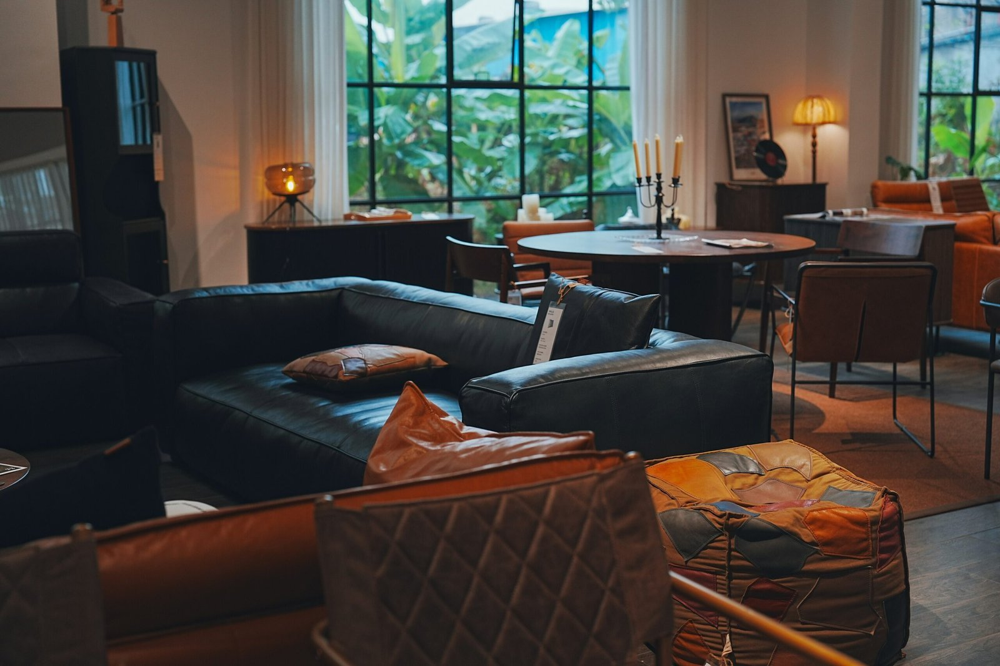
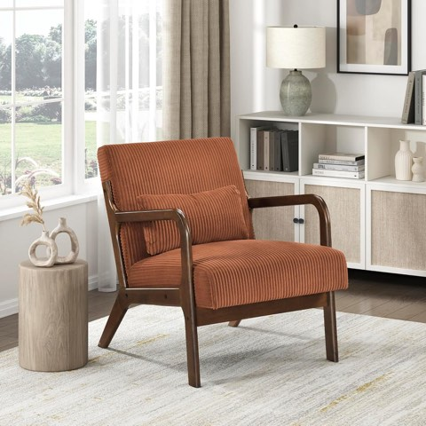
Lexicon Mid Century Modern Accent Chair with Solid Wood Armrests and Legs
Shop on AmazonModernizing Without Losing the Soul
Contemporary art, varied textures, and discreetly integrated smart tech can all update the finished room without undermining the mid-century foundation underneath.
Keeping the overall room feeling light, rather than overly staged, is what lets these modern touches coexist with the style's original spirit.
Mistakes Worth Avoiding Along the Way
Overdoing the "retro" theme, ignoring comfort for the sake of silhouette, cluttering the space, mixing too many different wood tones, and skipping lighting layers are the five most common missteps across this whole project.
Checking against this list at each stage, rather than only at the end, catches problems while they're still easy to fix.

Keeping Costs Down Along the Way
Mixing high and low pieces, thrifting and vintage hunting, doing select DIY projects, and using paint strategically all stretch the project budget without needing to compromise on the final look.
These budget tactics work at any step of the process, not just at the end.
Adding Art and the Finishing Layer
Art, decor, and the smallest finishing touches come last, once every structural and furniture decision is already in place.
This sequencing keeps finishing touches from needing to be redone when an earlier, bigger decision shifts.
Bringing In Texture and Materials
Textiles, rugs, and material variety get layered in once the bigger furniture and lighting decisions are locked, adding depth without competing with earlier choices.
Layering the Lighting
A bold statement fixture, layered with secondary light sources, should go in once the furniture layout is settled, so placement actually serves the final arrangement.
Warm-toned bulbs throughout and a thoughtful, cohesive metal mix finish this step without needing to revisit it later.
Planning the Layout and Flow
Keeping the room open and airy, with furniture arranged to create genuine conversation zones, should get mapped out before pieces go into their final spots.
A rug added at this stage helps visually define the layout, grounding the furniture arrangement rather than floating independently of it.

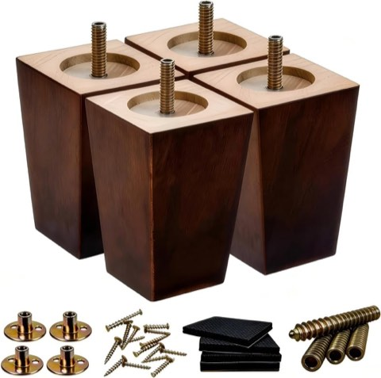
SHANJUE 5 Inch Wood Square Sofa Legs, 4 Pcs, Replacement Legs for Chairs and Sofas
Shop on Amazon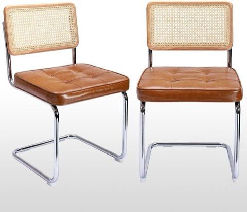
Zesthouse Natural Rattan Dining Chairs, Set of 2, Modern Cesca Style Kitchen Chair
Shop on Amazon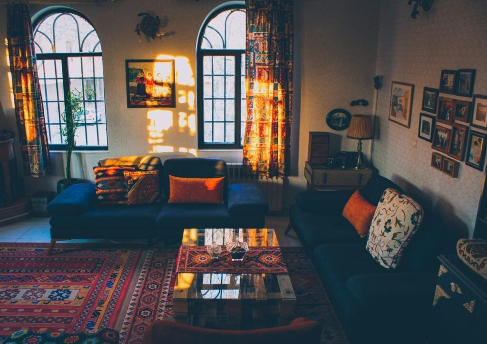

Adding the Supporting Furniture
Armchairs, a credenza or sideboard, and any additional storage get chosen once the two anchor pieces are settled, so everything scales correctly around them.
Deliberately balancing vintage finds with newer pieces at this stage avoids the all-or-nothing trap of trying to furnish the whole room from one source.
Choosing the Anchor Furniture
The sofa is the room's real anchor and deserves the most careful selection, sleek, structured, and sized properly for the space.
The coffee table comes next, treated as a genuine centerpiece rather than an afterthought once the sofa's in place.


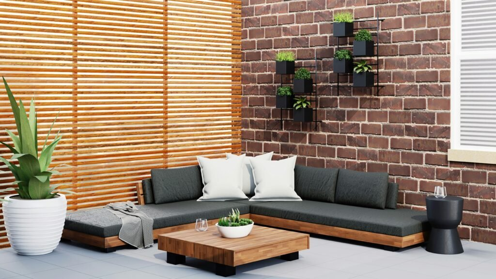
Small Round Nesting Coffee Table Set, 2 Pcs, Walnut Mid Century Modern
Shop on AmazonSettling the Color Palette
A warm neutral base with a considered accent color or two should get locked in before furniture shopping starts, since furniture choices will need to work with it, not the other way around.
This sequencing matters, choosing furniture first and the palette second usually means compromising on one or the other.


Understanding What the Style Actually Requires
Clean lines, tapered legs, and function-first design are the non-negotiables worth keeping in mind through every later decision in the project.
Knowing this upfront prevents later purchases that technically look "retro" but don't actually fit the style's real logic.
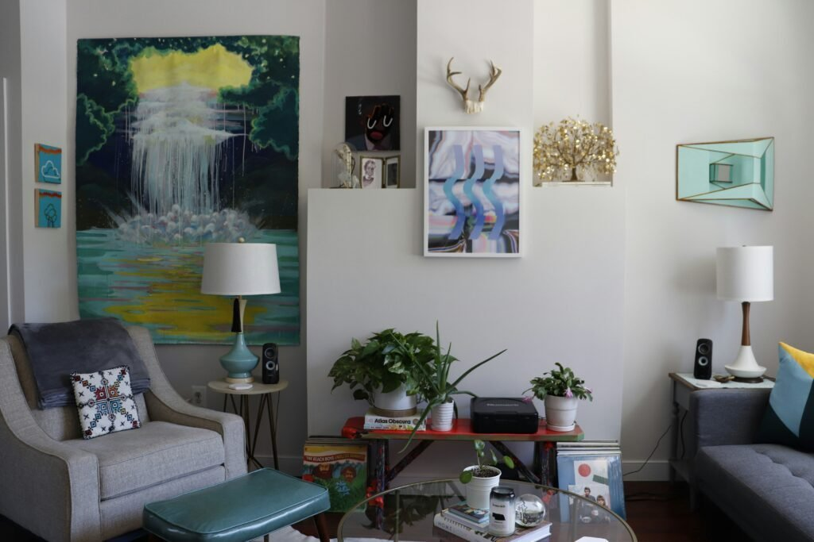

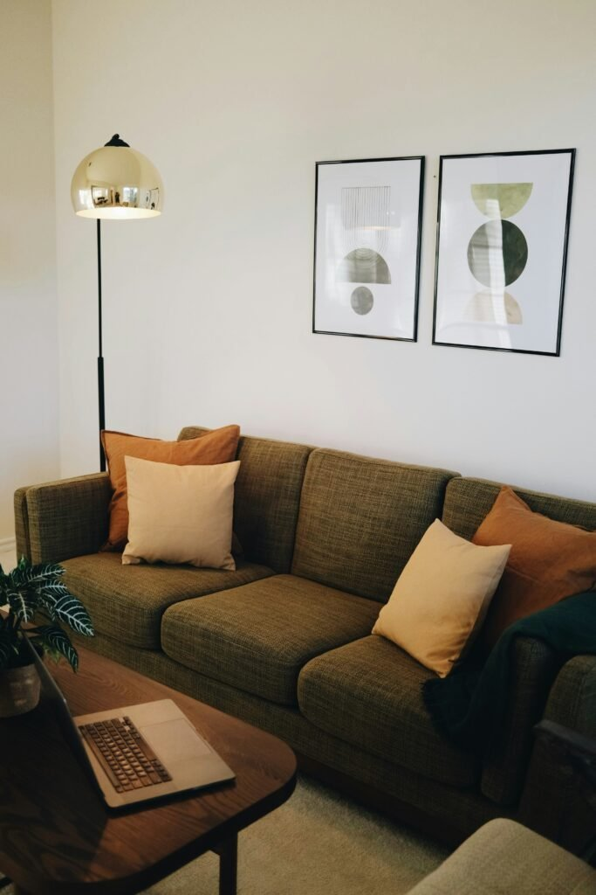
SHANJUE 5 Inch Wood Square Sofa Legs, 4 Pcs, Replacement Legs for Chairs and Sofas
Shop on AmazonZesthouse Natural Rattan Dining Chairs, Set of 2, Modern Cesca Style Kitchen Chair
Shop on AmazonPlanning Before Buying Anything
A simple vision board, a real budget number, and one chosen "hero piece" to build the whole room around give the project a clear direction before any money gets spent.
Resisting the urge to rush this stage saves far more time than it costs, most makeover regrets trace back to skipping real planning.
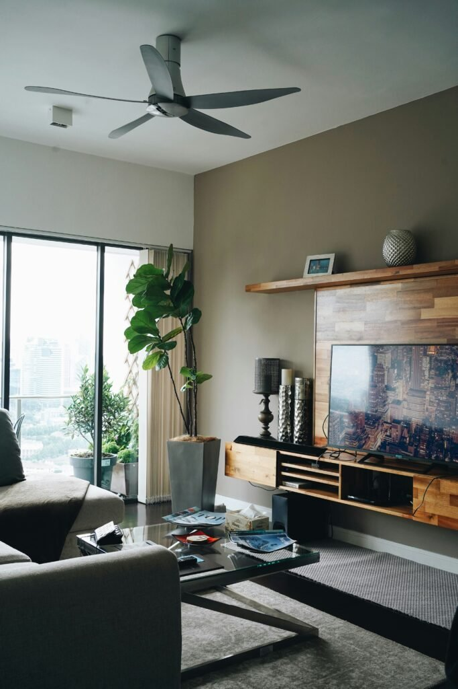
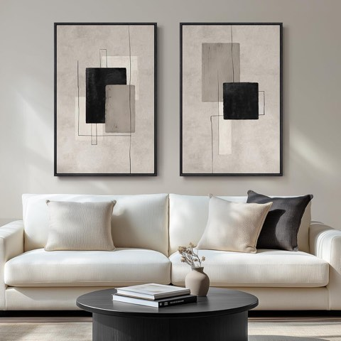
Large Framed Neutral Abstract Wall Art Set of 2, 24 x 36 Inch, for Living Room
Shop on Amazon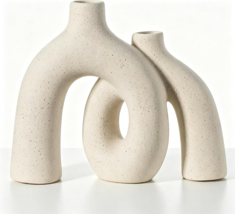
CEMABT Modern Nordic Boho Ceramic Vase Set, Beige Matte, for Living Room and Bookshelf
Shop on Amazon

Your Makeover Awaits
None of this needs to happen in a single weekend.
The real sequence that works best starts with planning and the palette, moves to the anchor furniture, then the layout and lighting, and ends with the finishing touches, roughly in that order, to avoid the rework that comes from skipping ahead.
A mid-century makeover done thoughtfully in sequence gets to the finished room with far less backtracking than one improvised room by room, piece by piece, without any plan at all.